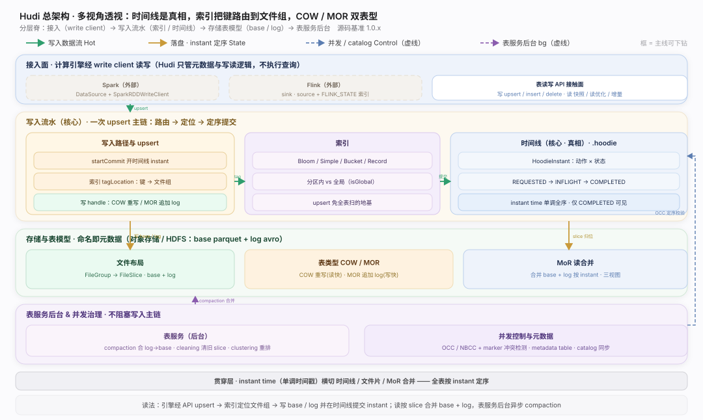
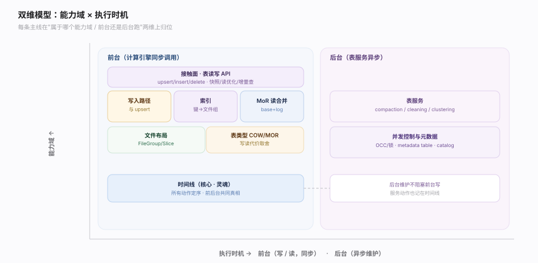
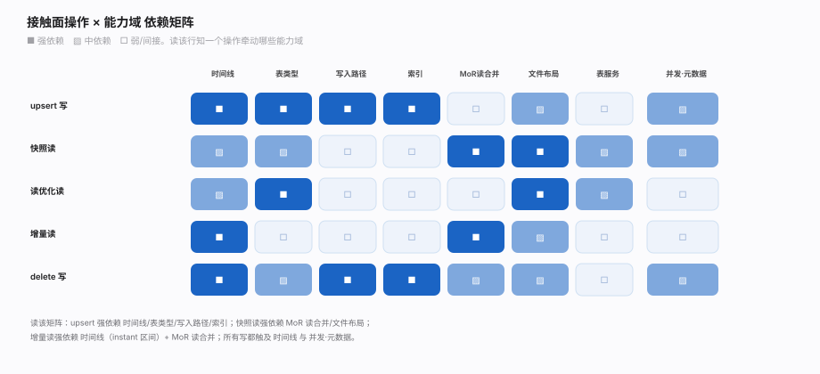
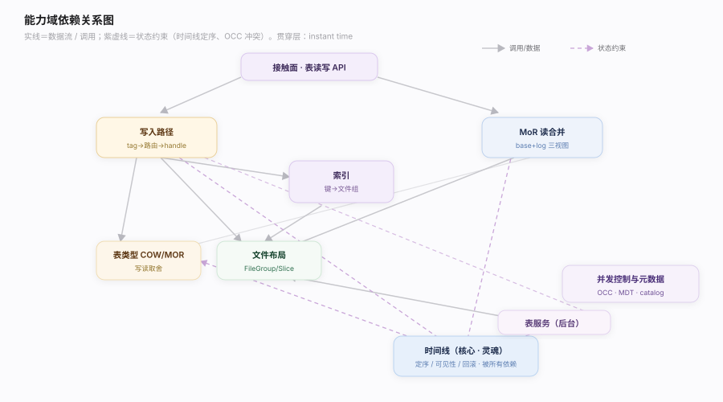
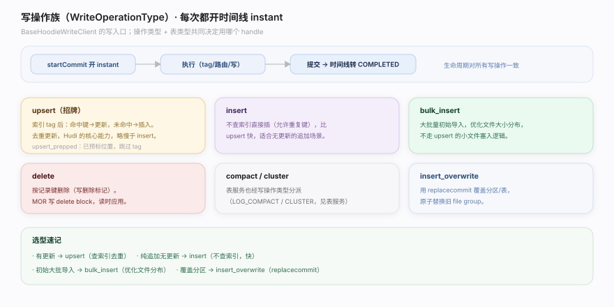
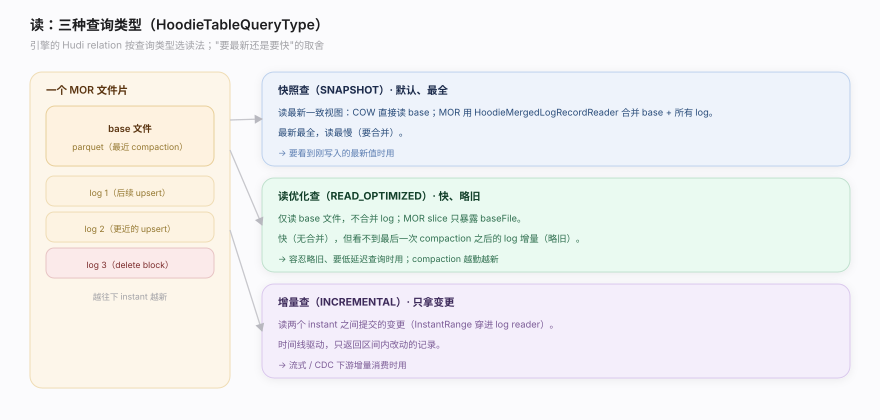
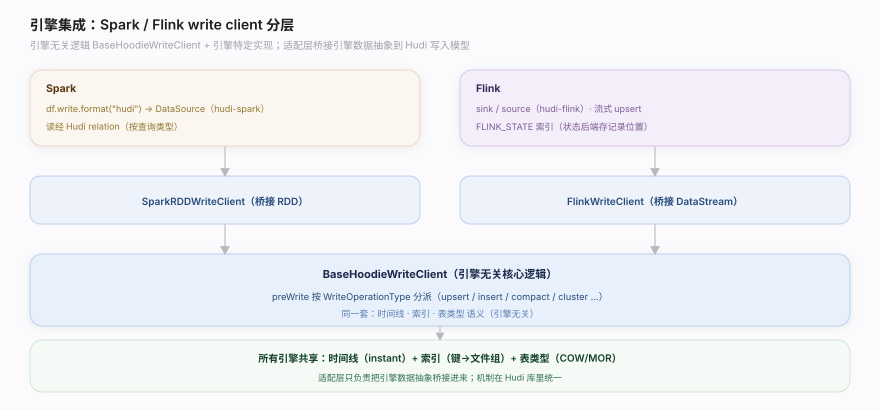
hudi-client/)。| 结构 | 定义 | 职责 |
|---|---|---|
| BaseHoodieWriteClient | client/BaseHoodieWriteClient.java:140 | 写操作族入口(引擎无关) |
| upsert | client/BaseHoodieWriteClient.java:468 | 索引去重后更新/插入(招牌) |
| insert | client/BaseHoodieWriteClient.java:491 | 不查索引直插(快) |
| bulkInsert | client/BaseHoodieWriteClient.java:517 | 大批初始导入 |
| delete | client/BaseHoodieWriteClient.java:564 | 按键写删除标记 |
| preWrite | client/BaseHoodieWriteClient.java:595 | 按 WriteOperationType 分派 |
| startCommit | client/BaseHoodieWriteClient.java:1088 | 开时间线 instant |
| WriteOperationType | common/model/WriteOperationType.java:28 | upsert/insert/bulk_insert/delete/compact/cluster |
| HoodieTableQueryType | common/model/HoodieTableQueryType.java:32 | 快照/读优化/增量查 |
| SparkRDDWriteClient | client/SparkRDDWriteClient.java:71 | Spark 实现(upsert :202) |
| HoodieFlinkWriteClient | client/HoodieFlinkWriteClient.java:80 | Flink 实现(upsert :224) |
| FlinkInMemoryStateIndex | index/state/FlinkInMemoryStateIndex.java | Flink 状态后端存记录位置 |
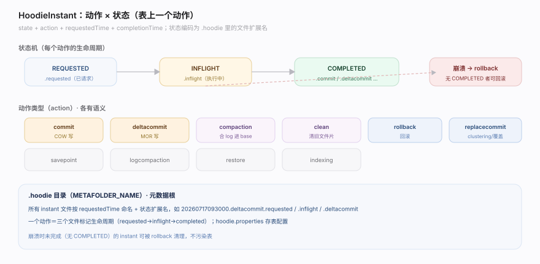
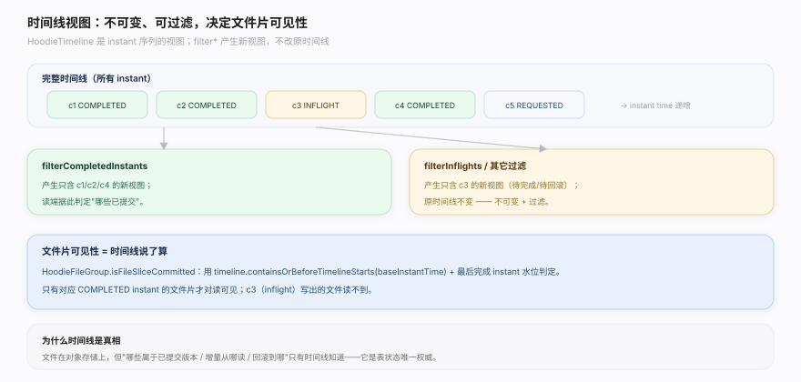
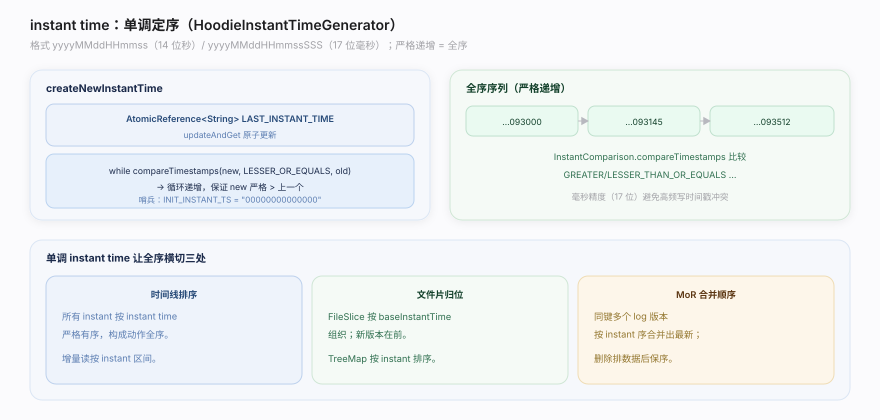
hudi-common/)。| 结构 | 定义 | 职责 |
|---|---|---|
| HoodieInstant | timeline/HoodieInstant.java:31 | 动作(action)× 状态(state)+ 时间 |
| HoodieTimeline | timeline/HoodieTimeline.java:46 | 不可变 instant 视图 + 动作常量 |
| HoodieInstantTimeGenerator | timeline/HoodieInstantTimeGenerator.java:43 | 单调 instant time 生成 |
| HoodieTableMetaClient | table/HoodieTableMetaClient.java:131 | .hoodie 元数据目录 |
| isFileSliceCommitted | model/HoodieFileGroup.java:154 | 文件片可见性(靠时间线) |
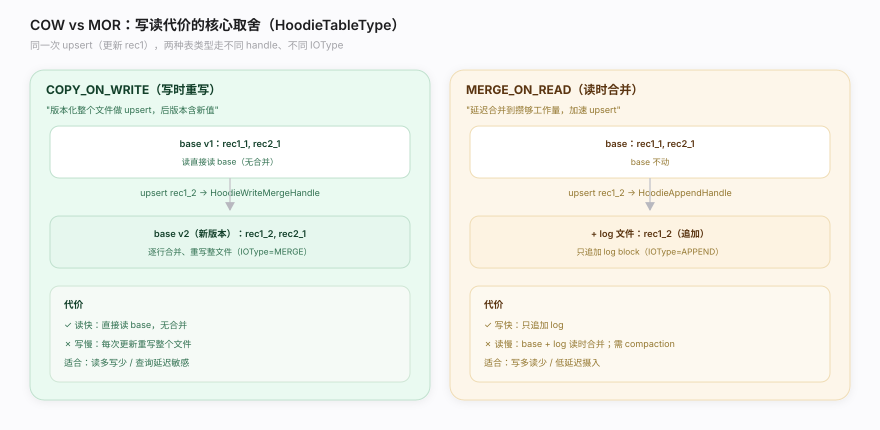
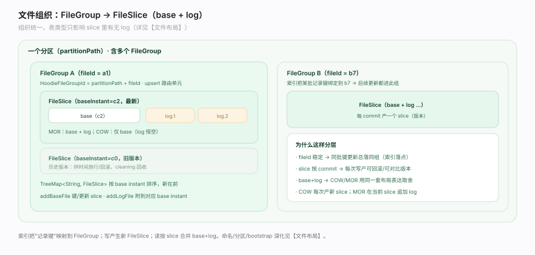
hudi-common/、hudi-client/)。hoodie.parquet.max.file.size:base 文件目标大小;太小碎片多、太大重写贵(COW)。| 结构 | 定义 | 职责 |
|---|---|---|
| HoodieTableType | model/HoodieTableType.java:30 | COPY_ON_WRITE / MERGE_ON_READ |
| HoodieWriteMergeHandle | io/HoodieWriteMergeHandle.java:71 | COW 逐行重写文件 |
| HoodieAppendHandle | io/HoodieAppendHandle.java:68 | MOR 追加 log 文件 |
| FileGroup | model/HoodieFileGroup.java:42 | upsert 路由单元(多 slice) |
| FileSlice | model/FileSlice.java:37 | base file + log files(某 commit) |
| IOType | model/IOType.java:25 | MERGE / CREATE / APPEND |
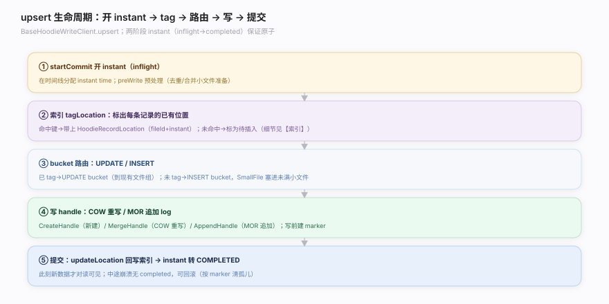
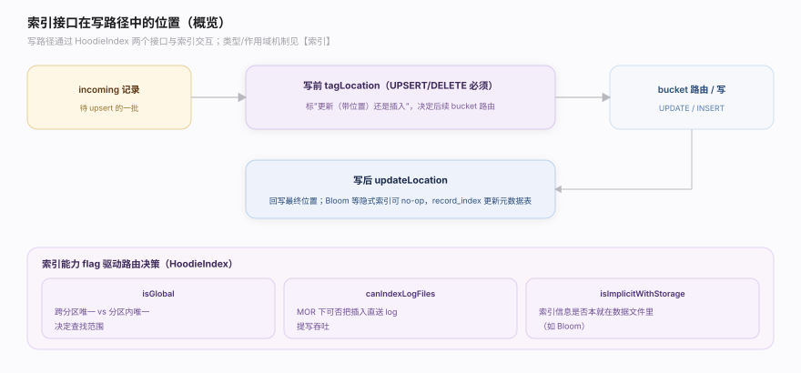
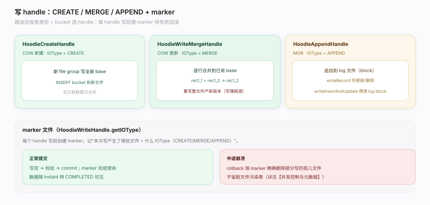
hudi-client/)。hoodie.parquet.small.file.limit:让 INSERT 塞进未满小文件,减少碎片(与文件目标大小配合)。| 结构 | 定义 | 职责 |
|---|---|---|
| BaseHoodieWriteClient.upsert | client/BaseHoodieWriteClient.java:468 | upsert 生命周期入口 |
| startCommit / preWrite | client/BaseHoodieWriteClient.java:1088 / :582 | 开 instant / 预处理 |
| tagLocation / updateLocation | index/HoodieIndex.java:80 / :88 | 写前标位置 / 写后回写 |
| BucketType | table/action/commit/BucketType.java:21 | UPDATE / INSERT 路由 |
| HoodieWriteMergeHandle / AppendHandle / CreateHandle | io/ | COW 重写 / MOR 追加 / 新建 |
| getIOType(marker) | io/HoodieWriteHandle.java:204 | 写产物标记(失败回滚) |
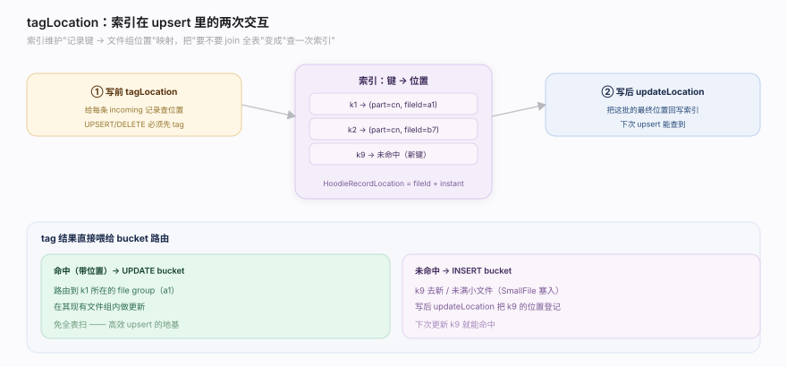
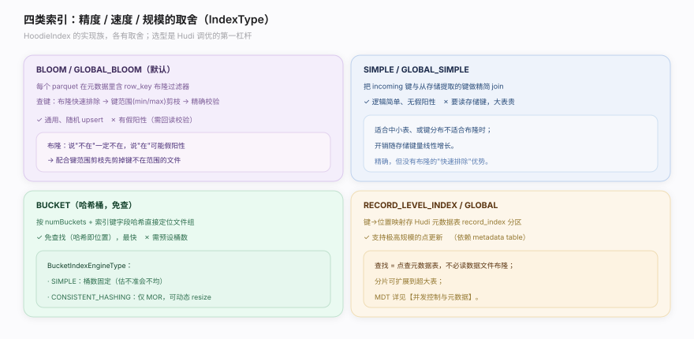
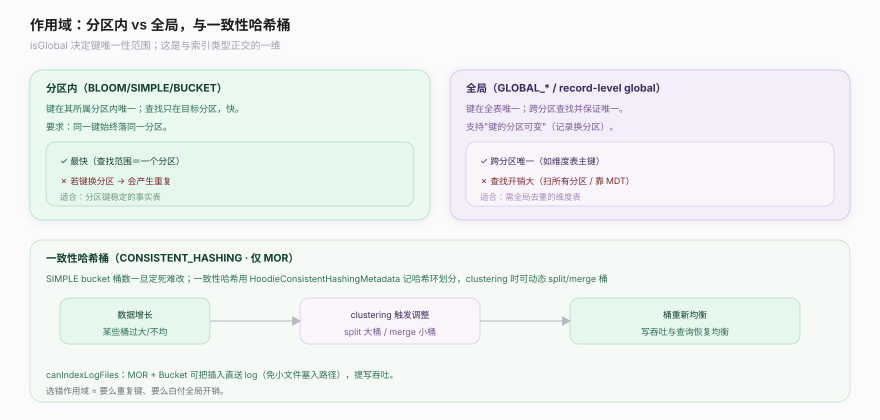
HoodieIndex.tagLocation 在 upsert 前给每条记录标出它该更新的文件组,让更新不必全表扫。索引类型(Bloom/Simple/Bucket/RECORD_LEVEL)+ 作用域(分区内/全局)决定 upsert 效率。被【写入路径与 upsert】调用做 tag/路由,依赖【文件布局】的 file group、【元数据】的 metadata table。源码基准 Hudi(1dfbdcb)(hudi-client/、hudi-common/)。| 结构 | 定义 | 职责 |
|---|---|---|
| HoodieIndex | index/HoodieIndex.java:40 | 索引基类:记录键→位置 |
| tagLocation | index/HoodieIndex.java:80 | 写前标记记录已有位置 |
| updateLocation | index/HoodieIndex.java:88 | 写后回写最终位置 |
| IndexType | index/HoodieIndex.java:161 | Bloom/Simple/Bucket/RecordLevel |
| HoodieBloomIndex | index/bloom/HoodieBloomIndex.java:59 | 布隆过滤器 + 键范围剪枝 |
| HoodieBucketIndex | index/bucket/HoodieBucketIndex.java:53 | 哈希桶(免查),含一致性哈希 |
| isGlobal / canIndexLogFiles | index/HoodieIndex.java:111 | 作用域 / 可否直送 log |
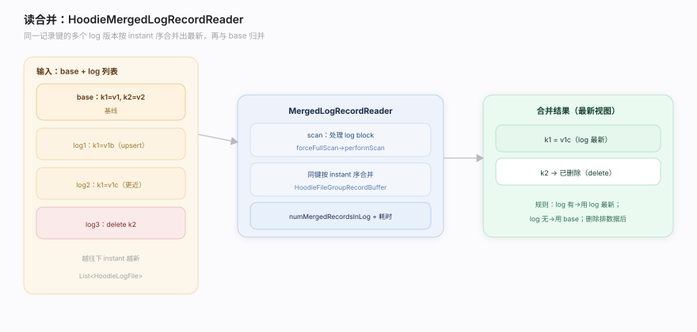
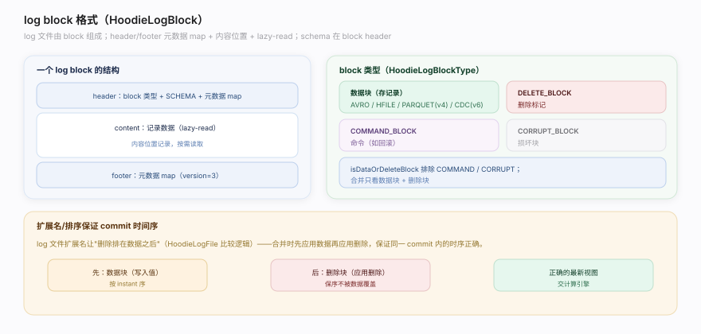
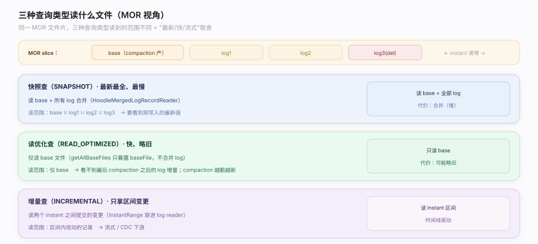
hudi-common/)。| 结构 | 定义 | 职责 |
|---|---|---|
| HoodieMergedLogRecordReader | table/log/HoodieMergedLogRecordReader.java:57 | 合并同键 log record |
| performScan | table/log/HoodieMergedLogRecordReader.java:97 | forceFullScan 触发全扫合并 |
| BaseHoodieLogRecordReader.instantRange | table/log/BaseHoodieLogRecordReader.java:110 | 增量区间过滤(isInRange :310) |
| HoodieLogBlock | table/log/block/HoodieLogBlock.java:68 | log block(header/内容,v3 :76) |
| HoodieLogBlockType | .../HoodieLogBlock.java:211 | AVRO/PARQUET/DELETE/COMMAND 块 |
| isDataOrDeleteBlock | .../HoodieLogBlock.java:241 | 排除 COMMAND/CORRUPT |
| LogFileComparator | common/model/HoodieLogFile.java:234 | log 排序(删除后置/commit 序) |
| getAllBaseFiles | common/model/HoodieFileGroup.java:238 | 读优化只取 base |
| HoodieTableQueryType | common/model/HoodieTableQueryType.java:32 | SNAPSHOT/READ_OPTIMIZED/INCREMENTAL |
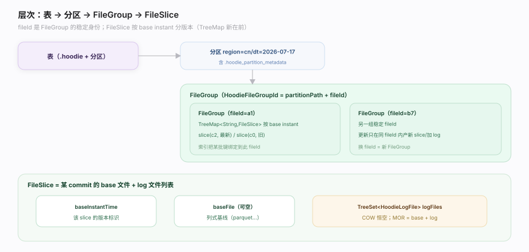
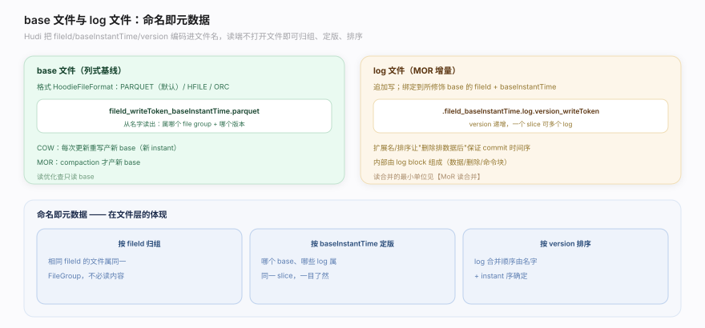
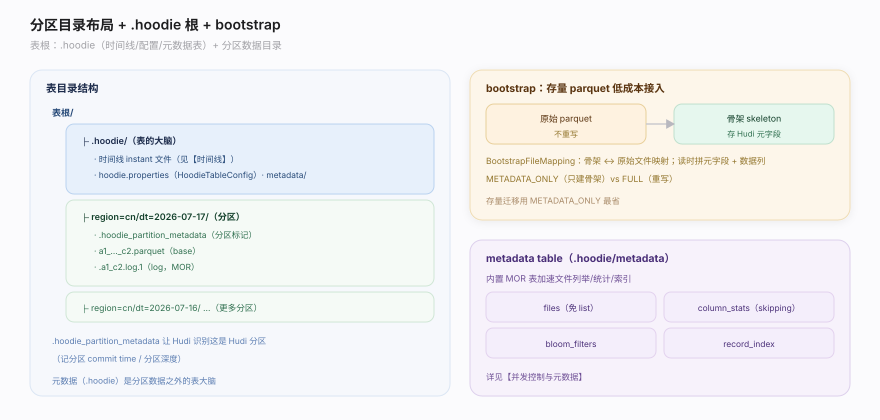
hudi-common/)。hoodie.parquet.max.file.size + hoodie.parquet.small.file.limit:base 目标大小与"小文件"阈值——太小碎片多、查询慢,太大 COW 重写贵。| 结构 | 定义 | 职责 |
|---|---|---|
| HoodieFileGroup | common/model/HoodieFileGroup.java:47 | upsert 路由单元(多 slice) |
| addBaseFile / addLogFile | common/model/HoodieFileGroup.java:108 / :120 | 建 slice / 附 log |
| getLatestFileSlice | common/model/HoodieFileGroup.java:199 | 取最新版本 slice |
| HoodieFileGroupId | common/model/HoodieFileGroupId.java:34 | partitionPath + fileId(身份) |
| FileSlice | common/model/FileSlice.java:46 | base + log(某 commit 版本) |
| HoodieBaseFile | common/model/HoodieBaseFile.java:36 | base 文件抽象 |
| HoodieLogFile | common/model/HoodieLogFile.java:47 | log 文件命名/排序 |
| LogFileComparator | common/model/HoodieLogFile.java:234 | log 排序(删除后置/commit 序) |
| HoodieFileFormat | common/model/HoodieFileFormat.java:34 | PARQUET :39 / HFILE :46 / ORC :52 |
| HoodiePartitionMetadata | common/model/HoodiePartitionMetadata.java:50 | 分区标记 |
| BootstrapFileMapping | common/model/BootstrapFileMapping.java:37 | 骨架↔原始文件映射 |
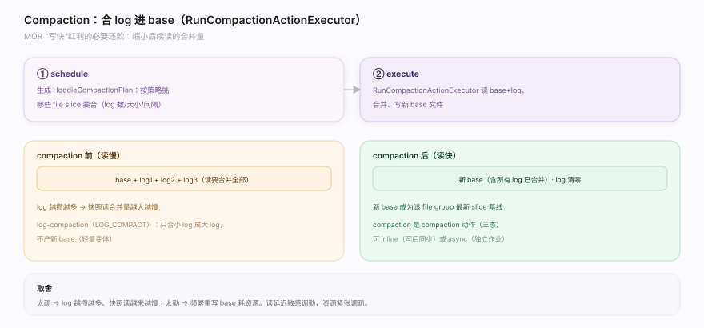
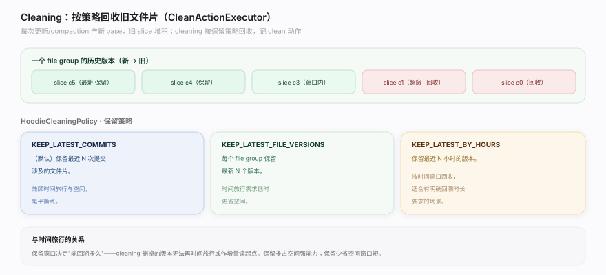
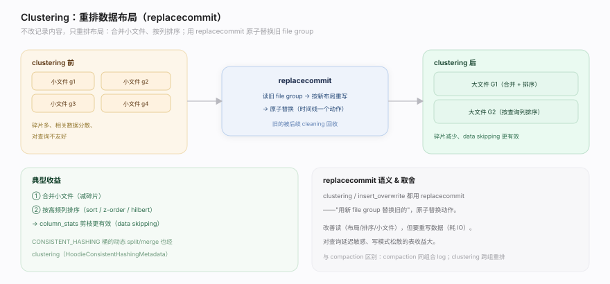
hudi-client/)。| 结构 | 定义 | 职责 |
|---|---|---|
| ScheduleCompactionActionExecutor | table/action/compact/ScheduleCompactionActionExecutor.java:58 | 生成 compaction 计划 |
| RunCompactionActionExecutor | table/action/compact/RunCompactionActionExecutor.java:48 | 合 log 进 base |
| LOG_COMPACT | common/model/WriteOperationType.java:59 | 只合 log 的轻量变体 |
| CleanPlanActionExecutor | table/action/clean/CleanPlanActionExecutor.java:62 | 生成 clean 计划 |
| CleanActionExecutor | table/action/clean/CleanActionExecutor.java:61 | 清旧文件片 |
| HoodieCleaningPolicy | common/model/HoodieCleaningPolicy.java:34 | 版本/提交/小时保留策略 |
| ClusteringPlanActionExecutor | table/action/cluster/ClusteringPlanActionExecutor.java:44 | 生成 clustering 计划 |
| WriteOperationType.CLUSTER | common/model/WriteOperationType.java:46 | clustering(replacecommit) |
| SparkExecuteClusteringCommitActionExecutor | table/action/cluster/SparkExecute...java:35 | Spark 执行 clustering |
| HoodieConsistentHashingMetadata | common/model/HoodieConsistentHashingMetadata.java:48 | 一致性哈希桶划分 |
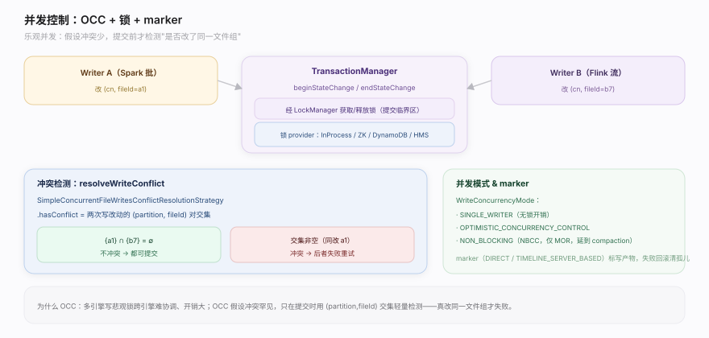
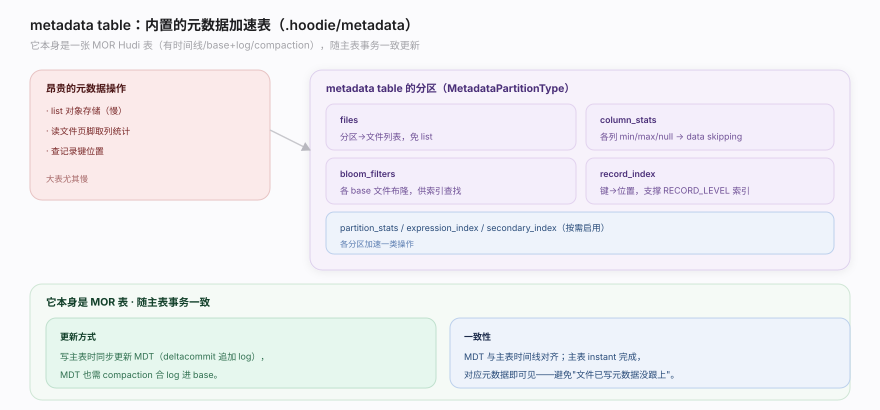
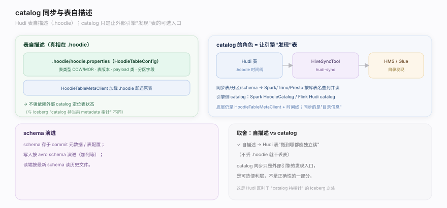
hudi-client/、hudi-common/)。| 结构 | 定义 | 职责 |
|---|---|---|
| WriteConcurrencyMode | common/model/WriteConcurrencyMode.java:30 | SINGLE/OCC/NBCC |
| TransactionManager | client/transaction/TransactionManager.java:37 | 事务原子(begin :56/end :68) |
| LockManager | client/transaction/lock/LockManager.java:46 | lock :76/unlock :97 |
| resolveWriteConflict | client/BaseHoodieWriteClient.java:435 | 提交前冲突解析入口 |
| SimpleConcurrentFileWritesConflictResolutionStrategy | client/transaction/...java:52 | (partition,fileId) 交集(hasConflict :133) |
| MarkerType | common/table/marker/MarkerType.java:30 | DIRECT :33 / TIMELINE_SERVER_BASED :39 |
| MetadataPartitionType | metadata/MetadataPartitionType.java:92 | files/col_stats/bloom/record_index |
| HoodieTableMetaClient | common/table/HoodieTableMetaClient.java:127 | 加载 .hoodie(时间线+配置) |
| HoodieTableConfig | common/table/HoodieTableConfig.java:129 | hoodie.properties 表自描述 |
| HiveSyncTool | hudi-hive-sync/.../HiveSyncTool.java:92 | 同步表/分区/schema 到 HMS |